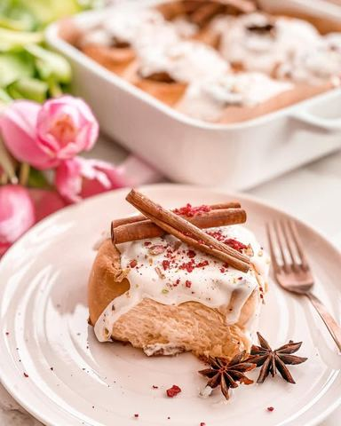

Moja beleška
SačuvanoSastojci
- Testo
- Premaz sa cimetom
- Premaz od krem sira
Priprema
U činiju u kojoj ćete mesiti testo, sipajte toplu vodu, kvasac, kašičicu šećera i kašičicu brašna. To lepo promešajte i ostavite 10ak minuta da se kvasac aktivira. Potom dodajte sve ostale sastojke sem brašna, izmutite mikserom, pa dodajte polovinu brašna, koju ćete izmešati mikserom, a onda ili promenite nastavak, pa koristite onaj za mešanje testa ili umesite ručno. Bitno je da to traje jedno 5,6 minuta da se lepo poveze. Testo će biti izrazito mekano, malko lepljivo, ali takvo vam je i potrebno za savršeno mekane i ukusne rolnice. Prebacite ga u nauljenu posudu, prekrijte krpom i ostavite u toplom narednih sat vremena dok se ne duplira. Nakon toga na blago pobrašnjenoj podlozi razvucite testo u oblik pravougaonika i sada ga je potrebno premazati mešavinom omekšalog putera, žutog šećera i cimeta ( nju lepo mikserom umutite) Lagano urolate premazano testo u rolat, pa nožem za hleb isečete na 10-12 rolnica. Poredjajte ih na pleh na papir za pečenje sa razmakom izmedju, prebacite providnu foliju preko i ostavite dodatnih 15 ak minuta na toplom. Za to vreme zagrejte rernu na 180C. Ja sam moje pekla 18 minuta, a na vrele sam premazala krem sir preliv. Za njega je potrebno da umutite krem sir sa šećerom u prahu, tome dodate aromu vanile i istopljen puter, dodatno povežete i taaadam. Najmekše, najlepše i najsočnije cimet rolnice su pred vama. 🤗🤤
Originalni opis sa Instagrama
Cinnamon rolls 🌸💫 Nadam se da ću slikama bar donekle da vam prenesem mekoću i sočnost, i da ćete uživati i u pripremi uz proveren recept, ali i da ćete posle šetnje i promrzlih obraza uživati u ovim zalogajima. Ja sam i više nego zaljubljena 💓 Testo: •60 ml tople vode •1 suvi kvasac •150 ml mleka sobne temperature •2 veća jaja •50 gr kristal šećera +1 kašičica •1/2 kašičice soli •1 kašičica arome vanile •125 gr istopljenog putera •600 gr mekog belog brašna tip 400 +1 kašičica brašna Premaz sa cimetom: •80 gr omeksalog putera •200 gr braon šećera •15 gr cimeta (2 pune supene kašike) Premaz od krem sira: •45 gr omeksalog putera •100 gr šećera u prahu •1 kašičica arome vanile •100 gr ABC krem sira U činiju u kojoj ćete mesiti testo, sipajte toplu vodu, kvasac, kašičicu šećera i kašičicu brašna. To lepo promešajte i ostavite 10ak minuta da se kvasac aktivira. Potom dodajte sve ostale sastojke sem brašna, izmutite mikserom, pa dodajte polovinu brašna, koju ćete izmešati mikserom, a onda ili promenite nastavak, pa koristite onaj za mešanje testa ili umesite ručno. Bitno je da to traje jedno 5,6 minuta da se lepo poveze. Testo će biti izrazito mekano, malko lepljivo, ali takvo vam je i potrebno za savršeno mekane i ukusne rolnice. Prebacite ga u nauljenu posudu, prekrijte krpom i ostavite u toplom narednih sat vremena dok se ne duplira. Nakon toga na blago pobrašnjenoj podlozi razvucite testo u oblik pravougaonika i sada ga je potrebno premazati mešavinom omekšalog putera, žutog šećera i cimeta ( nju lepo mikserom umutite) Lagano urolate premazano testo u rolat, pa nožem za hleb isečete na 10-12 rolnica. Poredjajte ih na pleh na papir za pečenje sa razmakom izmedju, prebacite providnu foliju preko i ostavite dodatnih 15 ak minuta na toplom. Za to vreme zagrejte rernu na 180C. Ja sam moje pekla 18 minuta, a na vrele sam premazala krem sir preliv. Za njega je potrebno da umutite krem sir sa šećerom u prahu, tome dodate aromu vanile i istopljen puter, dodatno povežete i taaadam. Najmekše, najlepše i najsočnije cimet rolnice su pred vama. 🤗🤤 #cimetrolnice #cinnamonrollsrecipe #rolnice #mekanotesto #idejezadezert #creamcheesefrosting #zadovoljnahr